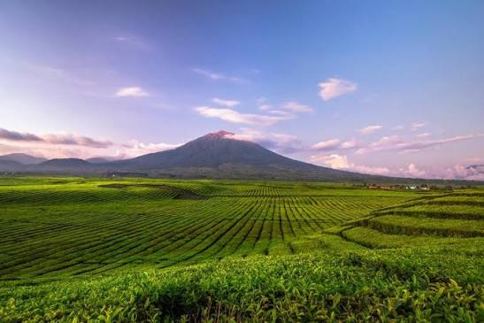
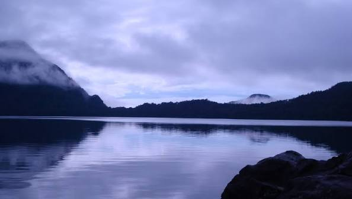
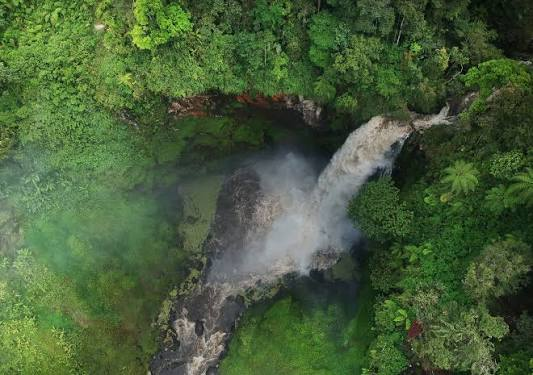

JambiSejarah
Candi Muaro Jambi
Kompleks candi Buddha di tepi Sungai Batanghari, salah satu situs peninggalan kuno terluas di Asia Tenggara.
Tempat-tempat yang menarik dikunjungi Jambi, dari wisata sejarah sampai alam.
Kompleks candi Buddha di tepi Sungai Batanghari, salah satu situs peninggalan kuno terluas di Asia Tenggara.

Hamparan kebun teh di kaki Gunung Kerinci yang berhawa sejuk dengan pemandangan gunung di latar belakang.

Danau vulkanik di ketinggian yang dikelilingi hutan, bisa dicapai dengan trekking dari kaki gunung.

Air terjun bertingkat di kawasan Kerinci dengan percikan air yang membentuk kabut tipis di sekitarnya.